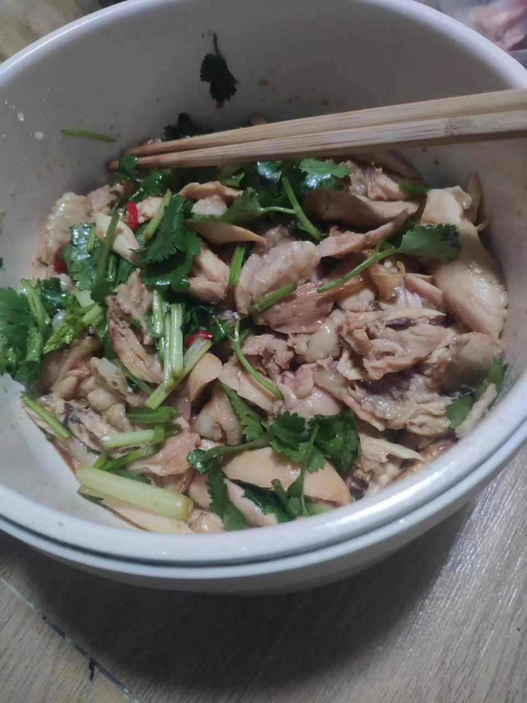

——此情绵绵而无绝期。
似乎有点理解“缠绵病榻”这句话了，当然，只是有一点啦。
就是咳嗽和精神不好。
昨天晚上，非常难得地做了噩梦。
噩梦内容十分独特。
有个鬼站在我得床头，似乎想要把我抬起来（或者把我的灵魂抽出来？）
我骂了一句，惊醒了，意识还是有点模糊，镇定了一下，问：有什么事么朋友？当然，没有东西回答我。
然后接着睡，再次噩梦，这次是传统的“遇见鬼，但是跑不动”的剧情。没点新意。
最后大脑大发慈悲地给了我一个美梦！太棒了，这是我这些年难得有做过的美梦，至于梦的内容，记不清啦，反正就是和朋友开心玩耍。
反正我梦不多。
今天是一个老朋友生日呢，祝他生日快乐，愿他有生的日子天天快乐。
朋友是很久没有联系的，不过依旧十分亲切。可惜我现在嗓子不是很方便。
朋友去了惠州，学技术去了，我还留在深圳混日子。
总的来说，我还是希望能向市中心发展，这边确实吃得不算好，住得也不算好。
很多事情，不是不能，也不是不愿，只是我懒得改变，懒得尝试。
改变不一定是好事，但是改变意味着改变。
和朋友还是太久没联系了，多少有些陌生。
以后也要多加强联系。
突然有点馋了，一会去楼下买几个鸡腿做手撕鸡。
回头可以展示一下成品。
刚想打游戏，看了眼任务，他娘的，怎么还有东西没完成，赶紧的赶紧的。